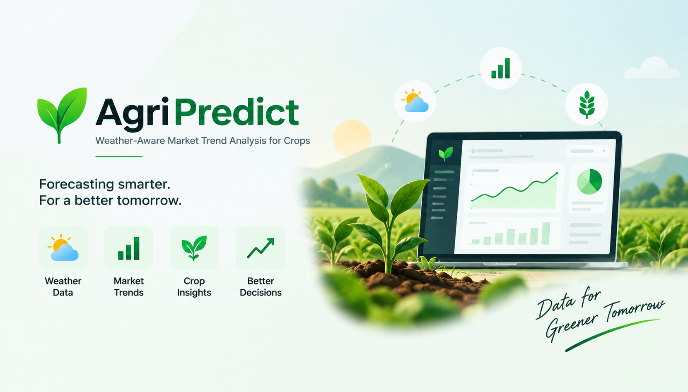
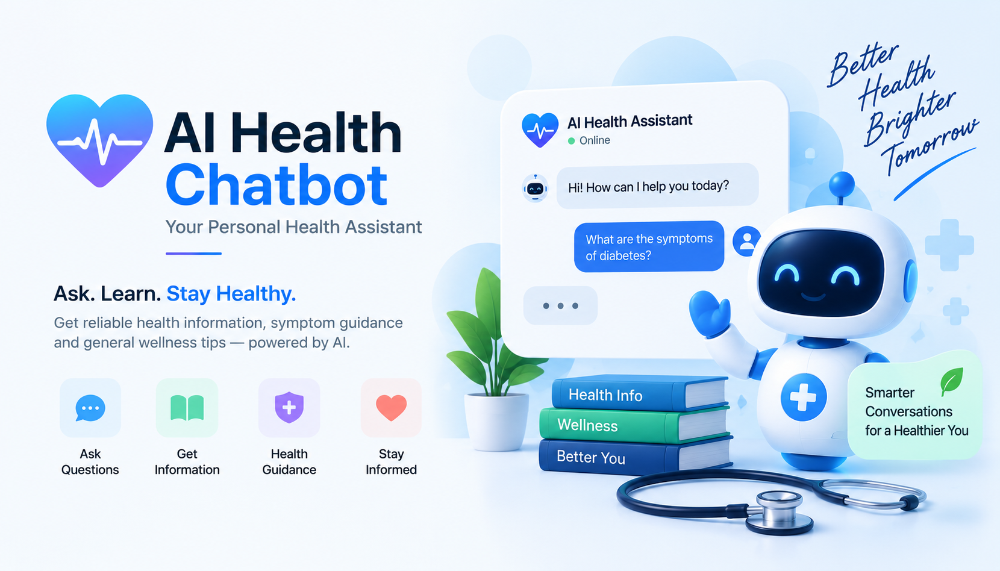

LIVE PRODUCT↗01 / ANALYTICSAGRICULTURE · DECISION SUPPORT
AgriPredict
Weather-aware market trend analysis that connects crop-price patterns and seasonal signals to practical agricultural decisions.
COMPUTER SCIENCE GRADUATE / DATA & AI
I’m Dhanush — I turn messy information into clear analytics, useful machine-learning workflows, and grounded Generative AI experiences.
I like the part where a complex problem becomes a clear next step — whether that’s a better dashboard, a more useful model, or an AI answer grounded in the right context.
class Dhanush:
role = "Data Science & AI"
degree = "B.E. Computer Science · 2026"
tools = ["Python", "SQL", "Power BI"]
explore = ["NLP", "RAG", "Embeddings"]
def approach(self, problem):
understand(problem)
build_a_solution()
return "Make it useful."Understand the business or user problem before choosing tools or models.
Clean data, validate assumptions and keep the workflow understandable.
Use retrieval and context to make language-model experiences more useful.
Projects across applied AI, language, machine learning and analytics. Filter by the kind of problem you want to explore.

LIVE PRODUCT↗01 / ANALYTICSWeather-aware market trend analysis that connects crop-price patterns and seasonal signals to practical agricultural decisions.

LIVE PRODUCT↗02 / GENERATIVE AIA conversational public-health awareness tool designed to answer common symptom, vaccination and outbreak questions with retrieval-backed context.
A retrieval-augmented workflow for validating financial queries against regulatory information with a vector-index approach.
Semantic matching concept that compares resume content with job descriptions to surface relevant skills and potential gaps beyond exact keywords.
A text-processing pipeline for cleaning language, extracting features and classifying opinions into sentiment categories using standard metrics.
Hands-on experiments with tree-based models, including Decision Tree and XGBoost, from training through evaluation.
Explored 50,000+ transactions to identify buying patterns, revenue trends and performance signals for decision-ready reporting.
Automates browser interactions and transforms collected web content into structured datasets for downstream analysis.
Every project is a chance to ask a sharper question, test an idea and learn something useful.
More on GitHub ↗Retrieval-augmented generation connects a model’s response to relevant source material. Here’s the core idea, simplified.
Retrieve information that matches the question.
Give the model context before it writes an answer.
Check relevance, grounding and response quality.
Tools are a means to an outcome. I choose them based on the problem, the data and the people who will use the result.
From analysis to retrieval, I’m building a toolkit for end-to-end data and AI work.
Internships across data science, analytics and software development have shaped how I approach practical problems.
Worked on Python data pipelines, SQL and file handling, exploratory analysis, and reusable preprocessing scripts.
Worked with business records, data-quality checks and analytics workflows. Internship experience letter included in credentials.
Developed and maintained Python modules, fixed bugs, and participated in code reviews and testing.
Certificates and internship documentation. Open a credential to view the supplied document or follow its verification link.
Experience letter confirming internship completion from July to October 2025.
I’m looking for opportunities to contribute to data, analytics and applied AI teams — and keep learning by building useful things.
Start a conversation ↗